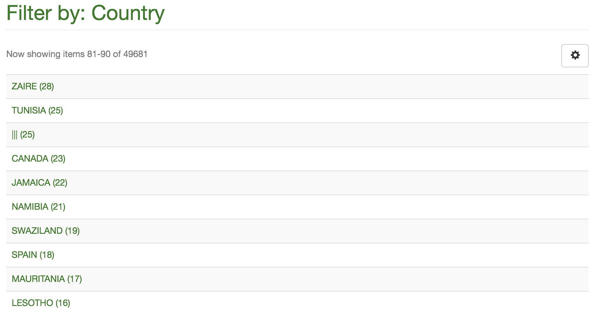

2016-11-01 Add dc.type to the output options for Atmire’s Listings and Reports module (#286) 2016-11-02 Migrate DSpace Test to DSpace 5.5 (notes Run all updates on DSpace Test and reboot the server
Read more →
2016-10-03 Testing adding ORCIDs to a CSV file for a single item to see if the author orders get messed up Need to test the following scenarios to see how author order is affected: ORCIDs only ORCIDs plus normal authors I exported a random item’s metadata as CSV, deleted all columns except id and collection, and made a new coloum called ORCID:dc.contributor.author with the following random ORCIDs from the ORCID registry: 0000-0002-6115-0956||0000-0002-3812-8793||0000-0001-7462-405X Hmm, with the dc.
Read more →
2016-09-01
- Discuss helping CCAFS with some batch tagging of ORCID IDs for their authors
- Discuss how the migration of CGIAR’s Active Directory to a flat structure will break our LDAP groups in DSpace
- We had been using
DC=ILRI to determine whether a user was ILRI or not
- It looks like we might be able to use OUs now, instead of DCs:
$ ldapsearch -x -H ldaps://svcgroot2.cgiarad.org:3269/ -b "dc=cgiarad,dc=org" -D "admigration1@cgiarad.org" -W "(sAMAccountName=admigration1)"
Read more →
2016-08-01
- Add updated distribution license from Sisay (#259)
- Play with upgrading Mirage 2 dependencies in
bower.json because most are several versions of out date
- Bootstrap is at 3.3.0 but upstream is at 3.3.7, and upgrading to anything beyond 3.3.1 breaks glyphicons and probably more
- bower stuff is a dead end, waste of time, too many issues
- Anything after Bootstrap 3.3.1 makes glyphicons disappear (HTTP 404 trying to access from incorrect path of
fonts)
- Start working on DSpace 5.1 → 5.5 port:
$ git checkout -b 55new 5_x-prod
$ git reset --hard ilri/5_x-prod
$ git rebase -i dspace-5.5
Read more →
2016-07-01
- Add
dc.description.sponsorship to Discovery sidebar facets and make investors clickable in item view (#232)
- I think this query should find and replace all authors that have “,” at the end of their names:
dspacetest=# update metadatavalue set text_value = regexp_replace(text_value, '(^.+?),$', '\1') where metadata_field_id=3 and resource_type_id=2 and text_value ~ '^.+?,$';
UPDATE 95
dspacetest=# select text_value from metadatavalue where metadata_field_id=3 and resource_type_id=2 and text_value ~ '^.+?,$';
text_value
------------
(0 rows)
- In this case the select query was showing 95 results before the update
Read more →
2016-06-01
Read more →
2016-05-01
- Since yesterday there have been 10,000 REST errors and the site has been unstable again
- I have blocked access to the API now
- There are 3,000 IPs accessing the REST API in a 24-hour period!
# awk '{print $1}' /var/log/nginx/rest.log | uniq | wc -l
3168
Read more →
2016-04-04
- Looking at log file use on CGSpace and notice that we need to work on our cron setup a bit
- We are backing up all logs in the log folder, including useless stuff like solr, cocoon, handle-plugin, etc
- After running DSpace for over five years I’ve never needed to look in any other log file than dspace.log, leave alone one from last year!
- This will save us a few gigs of backup space we’re paying for on S3
- Also, I noticed the
checker log has some errors we should pay attention to:
Read more →
2016-03-02
- Looking at issues with author authorities on CGSpace
- For some reason we still have the
index-lucene-update cron job active on CGSpace, but I’m pretty sure we don’t need it as of the latest few versions of Atmire’s Listings and Reports module
- Reinstall my local (Mac OS X) DSpace stack with Tomcat 7, PostgreSQL 9.3, and Java JDK 1.7 to match environment on CGSpace server
Read more →
2016-02-05
- Looking at some DAGRIS data for Abenet Yabowork
- Lots of issues with spaces, newlines, etc causing the import to fail
- I noticed we have a very interesting list of countries on CGSpace:

- Not only are there 49,000 countries, we have some blanks (25)…
- Also, lots of things like “COTE D`LVOIRE” and “COTE D IVOIRE”
Read more →